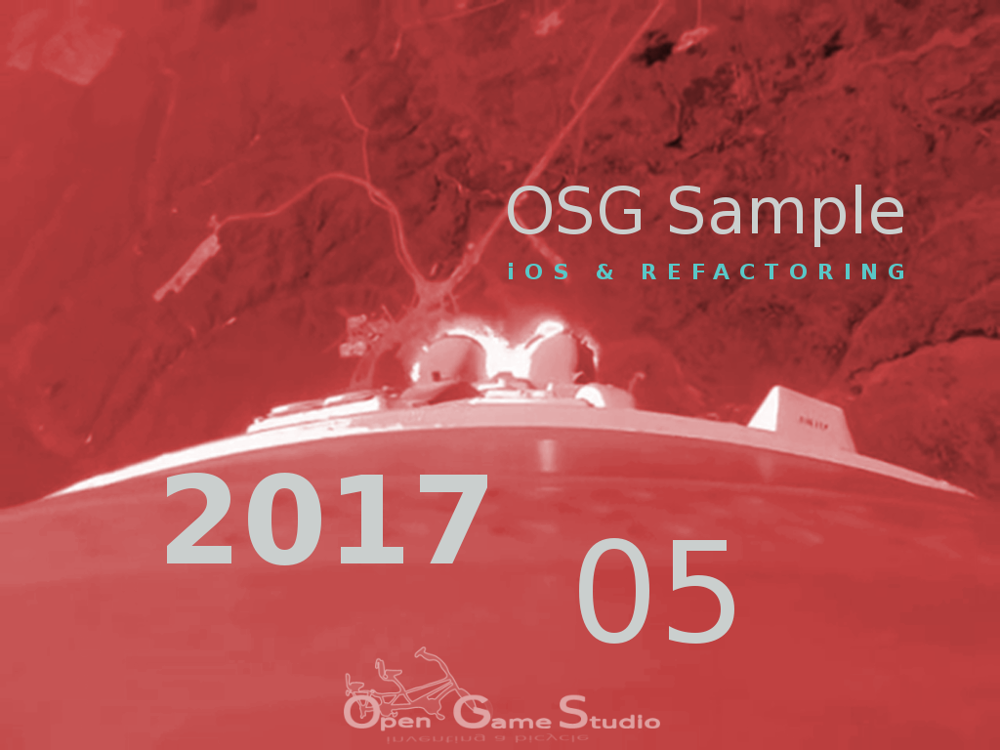

Новости
Назад в Статику
2017-10-16 00:00
Мы используем Wordpress в качестве движка нашего сайта уже более семи лет. И теперь пришло время двигаться вперед. Или назад. Некоторое время мы следили за разработкой нового поколения движков - генераторов статических сайтов. Похоже, что это технология, способная превратить прошлое в будущее.
Статический веб-сайт проще, быстрее и безопаснее. И с помощью генераторов им настолько же легко управлять, как и динамическим веб-сайтом. Так что мы начинаем наш сайт заново с помощью Pelican.. . .
Рождение вселенной MJIN
2017-09-10 00:00

Эта статья описывает рождение вселенной MJIN в августе 2017.
mjin-player
Как вы знаете, в июле мы изучали скриптование. Мы нашли решение, которое удовлетворяет следующим критериям. Скрипты должны:
- исполняться в исходном виде без изменений на всех поддерживаемых платформах
- позволять расширять код C++
Мы проверили второй критерий в рамках тестового приложения. В первый критерий мы просто поверили, т.к. он ДОЛЖЕН быть верен.. . .
Изучение скриптования
2017-08-16 00:00

Эта статья описывает изучение скриптования в июле 2017.
Наша основная цель использования скриптового языка - это наличие платформо-независимого кода, выполняемого без изменений на каждой поддерживаемой платформе.
Редактор 0.10 использует Python в качестве подобного кода с помощью SWIG. SWIG позволяет использовать практически любой код C/C++ из языков вроде Python, Ruby, Lua, Java, C# и т.д.. SWIG помог нам впервые оценить прелесть платформо-независимого кода. К сожалению, SWIG работает лишь в одном направлении: из C/C++ в язык назначения. Это приводит к тому, что основное приложение должно быть написано на языке назначения, а код C/C++ может быть использован лишь в виде библиотеки.. . .
OpenSceneGraph cross-platform guide
2017-07-17 00:00

Эта статья резюмирует создание кросс-платформенного руководства OpenSceneGraph.
Июнь ознаменовал собой окончание работы над кросс-платформенным руководством OpenSceneGraph. Мы опубликовали последний самоучитель (из изначально запланированных). Этот самоучитель описывает сборку и запуск примера приложения OpenSceneGraph в вебе с помощью Emscripten.. . .
Самоучитель iOS
2017-06-08 10:00

Эта статья описывает проблемы, с которыми мы столкнулись во время создания самоучителя для iOS в мае 2017.
В феврале мы сумели отобразить простую модель под iOS за считанные дни. Это дало нам уверенность, что самоучитель для iOS мы сделаем столь же быстро. Тем не менее, реальность напомнила нам о простой вещи: быстро сделать можно лишь поделку на коленке, работающую только у самого разработчика; над логически связанным примером, работающим у всех, придётся попотеть.. . .
Приложение OpenSceneGraph
2017-05-12 00:00

Эта статья описывает создание самоучителей по сборке приложения OpenSceneGraph на Linux, macOS, Windows и Android в апреле 2017.
Предыдущие самоучители описывали установку OpenSceneGraph на Linux, macOS, Windows и отображение модели с помощью стандартного инструмента osgviewer. На этот раз результатом нашей работы стало приложение OpenSceneGraph, которое работает на Linux, macOS, Windows и Android.. . .
Всё проходит хорошо
2017-04-07 00:00

Эта статья рассказывает о создании первых четырёх самоучителей OpenSceneGraph в марте 2017.
Первые четыре самоучителя OpenSceneGraph объясняют, как создать модель куба в Blender и затем отобразить её на Linux, macOS или Windows с помощью osgviewer, стандартного инструмента OpenSceneGraph.
Процесс создания одного самоучителя оказался довольно утомительным, т.к. он состоит из следующих задач:
- Записать видео с одним или более шагами. . .
Поехали
2017-03-16 00:00

В этой статье мы расскажем о результатах нашей работы в январе и феврале 2017: отображении куба на iOS/Веб и нашем инструменте для создания самоучителей.
Отображение куба на iOS/Web
К нашему удивлению, мы смогли отобразить простой красный куб на iOS и Веб довольно быстро: в начале февраля. Тем не менее, это лишь начало поддержки платформ Android, iOS и Веб. Впереди нас ждёт тернистая дорога, т.к. нам предстоит сделать ещё много вещей, прежде чем мы сможем объявить о полноценной поддержке этих платформ: визуальные эффекты, скрипты Python, архивы данных.. . .
Год испытаний
2017-01-25 00:00

Эта статья содержит наши планы на 2017 год.
Наши предыдущие планы предполагали, что сейчас у нас уже будет поддержка платформы Android. Тем не менее, у нас впереди ещё очень много работы, прежде чем мы сможем объявить о поддержке Android. Судите сами:

Кто-нибудь может посчитать это неудачей. Но не мы. Мы видим шанс начать с низкого старта и прыгнуть высоко!
Т.к. ранее мы имели опыт работы лишь с либеральным и всё прощающим настольным ПК, Android стал для нас полной неожиданностью. На каждом шагу нас ожидало наказание за фривольное использование памяти, ресурсов, графики. Чаще всего в ответ на наши действия мы получали либо падение приложения, либо пустой экран.. . .
Страница 5 из 9